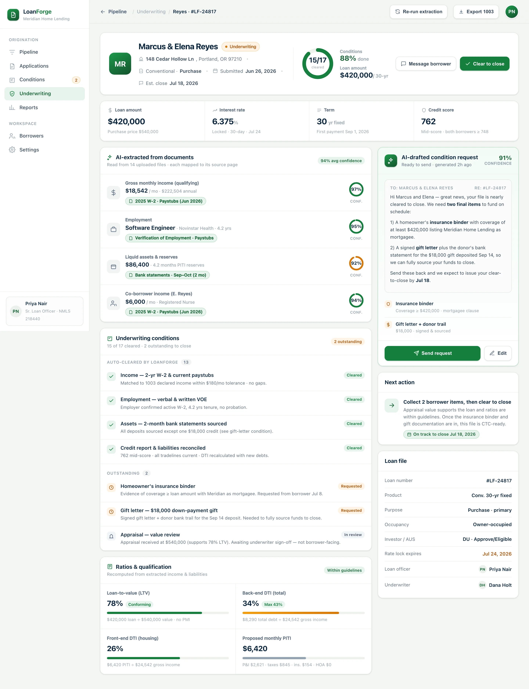

Extract
The engine reads income, employment, assets and liabilities from W-2s, paystubs, bank statements and appraisals — each field tagged to its source page with a confidence score.
LoanForge reads every borrower document, verifies income and assets against the file, and auto-clears the underwriting conditions that stall a loan — so your team closes in days, not weeks.
Most cycle time hides in conditions — the documents an underwriter needs before a file can clear. LoanForge sees every open condition by category and knocks out the ones a rule can settle.
Paystubs, W-2s and tax returns — the biggest queue, and the one that auto-clears most: 61% settle without a touch.
Values arrive, then wait for review. LoanForge checks value against LTV and routes only the exceptions to a human.
Title commitments and lien clearances, tracked to the day so nothing quietly ages past the rate lock.
Bank statements and large-deposit sourcing — where a single unexplained gift can stall an otherwise clean file.
Every loan carries a live picture of what's cleared and what's left — decomposed by condition category, not buried in an email thread.
LoanForge closes the loop from a folder of borrower documents to a clear-to-close decision — without a processor re-typing a single field.
The engine reads income, employment, assets and liabilities from W-2s, paystubs, bank statements and appraisals — each field tagged to its source page with a confidence score.
Extracted data is reconciled against the 1003 and agency guidelines, then the conditions that pass every rule clear themselves — 68% of them, untouched.
For what's left, LoanForge drafts the exact borrower request, recomputes DTI and LTV, and moves clean files straight to clear-to-close.
BuildspaceLabs built the MVP front end: a Loan Pipeline board for the whole book, and a single loan file where extraction, conditions and ratios come together.
Cycle-time, auto-clear and pull-through KPIs sit above a colour-coded loans table and a live read of outstanding conditions by category.

AI-extracted income and assets — each with a confidence ring and its source document — sit beside the underwriting conditions checklist, recomputed DTI/LTV, and an AI-drafted condition request ready to send.

Document extraction, condition-clearing and qualification consolidated into one loan-officer surface — nothing left in a shared inbox.
Cycle-time, auto-clear and pull-through KPIs above a triage-ready, colour-coded loans table.
Income, employment and assets read from borrower documents, each with a confidence score and source page.
Conditions that pass every rule clear themselves — 68% untouched — with the rest routed to a human.
The exact borrower email drafted for every outstanding item — with a confidence score, ready to send.
DTI, LTV and PITI recomputed live from extracted income and liabilities, checked against guidelines.
Extraction, conditions checklist, ratios and next action on one screen for every loan in the book.
In lending, a figure you can't defend is a figure you can't fund on. LoanForge never invents a value — each extracted field cites its source document and page, carries a confidence score, and nothing clears without passing a rule.
Delivered as a production-quality MVP in a ten-week engagement.
We build AI-native products like LoanForge. Tell us how your origination desk runs today and we'll show you what document extraction and auto-cleared conditions look like on your loans.